Oponentes


Cobalion

Consejos para vencer
Cobalion recibe menos daño si no sufre un problema de estado. Sin embargo, cada vez que se cure de un problema de estado, aumenta su resistencia en +2 a este hasta volverse inmune.
En la barra de PS 1, Cobalion se curará de problemas de estado cuando sus PS bajen del 50%. A partir de la barra de PS 2, además, se curará de problemas de estado también cada vez que use su movimiento compi.
Cobalion cuenta desde el principio con: Resistencia Quemadura +7, Resistencia Parálisis +1 y Resistencia Veneno +9. No tiene resistencias a Sueño y Congelación hasta que se cure de ellas. Al llegar a +10, se vuelve inmune a dicho problema de estado.
La mayoría de sus movimientos son físicos. Es recomendable reducir su Ataque o aumentar nuestra Defensa. Cuidado en la barra de PS 3, pues usará Espada Santa y aumentará su índice de críticos.
Más información

Latios

Consejos para vencer
Latios comienza con su Ataque Especial y su Defensa Especial a +3. Salamence bajará el Ataque de todos los compis en 1 y aumentará el suyo en 2 con cada movimiento que acierte. Dragonite aumentará el Ataque Especial de todo su bando en 1 con cada movimiento que acierte.
A partir de la barra de PS 2, Latios bajará la Defensa y la Defensa Especial a quien golpee con sus movimientos.
Durante la barra de PS 2 aumentará su Ataque y Ataque Especial en 1 cada vez que aseste un golpe crítico. En la barra de PS 3 solo aumentará su Ataque pero tendrá un 60% de posibilidades de hacerlo con cada acción que lleve a cabo.
Más información
Registeel

Consejos para vencer
Los aumentos y descensos en la Defensa y Defensa Especial afectan más de lo normal a ambos bandos. Registeel se aprovecha de esto aumentando su Defensa y Defensa Especial con movimientos y pasivas, además de recibir aún menos daño si sus defensas aumentan.
Los efectos de campo activados por Registeel serán permanentes, a menos que se consigan anular. Registeel se aprovecha de esto al comienzo de la barra de PS 1 con At. físicos ↓ y At. especiales ↓, al comienzo de la barra de PS 2 con Barra mov. acelerada y al comienzo de la barra de PS 3 con Bloqueo probl. estado.
Cuando sus PS bajan de 50%, en la barra de PS 1 bajará 2 niveles la Defensa de todo tu equipo, en la barra de PS 2 bajará 2 niveles la Defensa Especial, y en la barra de PS 3 bajará 2 niveles la Defensa y la Defensa Especial.
Empezará el combate con Defensa Férrea. Al comienzo de las barras de PS 2 y 3 obtendrá Siguiente crítico y Siguiente certero y usará Terremoto. Ten cuidado en las barras de PS 2 y 3 cuando sus PS bajen del 50%: puede usar Hiperrayo (barra de PS 2) y Gigaimpacto (barra de PS 3).
Más informaciónCombates

VS. Cobalion
Tras usar el movimiento de entrenador, el resto del combate consiste en alternar entre Lluevehojas y el movimiento sincro. Si Cobalion te envenenara con Puya Nociva, usa una Baya Ziuela para curar a Lurantis.
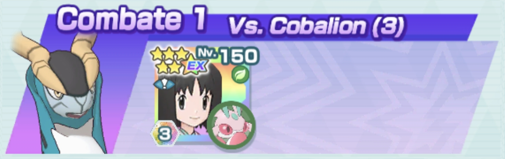

VS. Latios
Ataca todo el tiempo con Garra Metal. Usa el movimiento de entrenador justo antes del primer movimiento compi. Aprovecha la Zona Acero producto del rol entorno todo lo que puedas antes de volver a ponerla con el movimiento sincro. Intenta volver a poner la zona cuando puedas usar un movimiento compi. Acaba primero con Dragonite y después con Salamence. No uses las Superpociones hasta que no veas a Corviknight en verdaderos apuros.
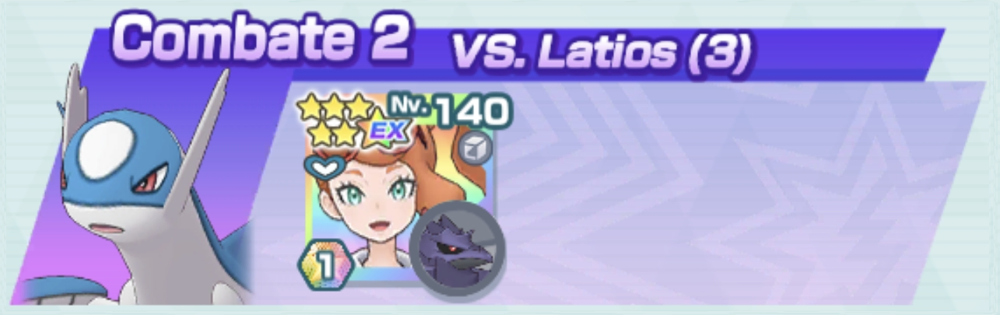

VS. Registeel

Intenta primero hacer retroceder a Registeel con Cabeza de Hierro y, cuando lo haga, usa Azote Torrencial y el movimiento de entrenador. Así hasta gastar los dos usos. Lo demás es alternar entre Cabeza de Hierro para retroceder o Azote Torrencial para maximizar el daño, curar y llenar barras más rápido. No uses los movimientos compi hasta que los PS de Registeel no bajen del 60% pero sin llegar a bajar del 50%. El combate sería más fácil si los retrocesos, curaciones y llenados de barras se activasen en tu favor. De lo contrario, puede hacerse cuesta arriba. Si Registeel paraliza a Urshifu, empieza de nuevo.
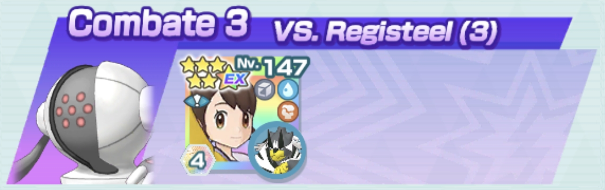
VS. Cobalion
Reinicia si Corin no recupera PM en el movimiento de entrenador. Cuando los PS de Cobalion estén por encima de la mitad, ataca todo el tiempo con Impresionar. Cuando bajen de la mitad haz lo siguiente: en la barra de PS 1 ataca con Cañón Batidor, en la barra de PS 2 haz igual y, si se quema, fulmínala con Teraexplosión. En la barra de PS 3 puedes acabar atacando todo el tiempo con Cañón Batidor.
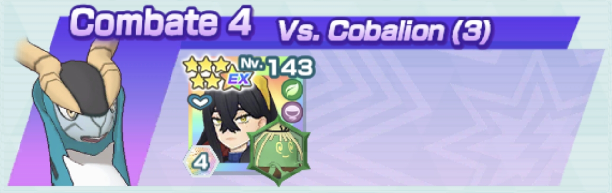
VS. Latios
Usa dos veces Teraexplosión, reactiva el círculo, de nuevo Teraexplosión y el movimiento de entrenador. A continuación, usa el movimiento compi y acaba la barra de PS 2 con Ventisca y la barra de PS 3 con Rayo Hielo. Furret tiene Crítico Impulsor +2 como habilidad fortuita.
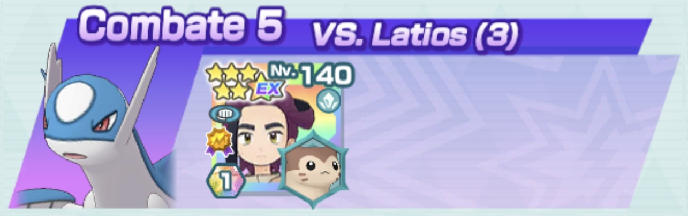
VS. Registeel
Usa el movimiento de entrenador y el movimiento sincro. Ataca con Teraexplosión hasta que el contador esté a 2 y volver a poner el sol con el movimiento sincro. Utiliza las Pociones al inicio de las barras de PS 2 y 3 después de que Hydrapple sufra daño de los Terremotos de Registeel. Si tienes ocasión de volver a poner el sol, hazlo para finalizar el combate.
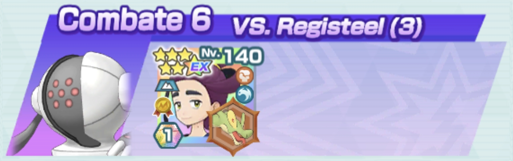
VS. Cobalion
Inicia con Garrote Liana, movimiento de entrenador y movimiento sincro. Tras el primer movimiento compi, usa Teraexplosión seguido del movimiento sincro. Si Ogerpon gana Velocidad y hace bajar el ataque de Cobalion el combate se facilita. Usa de nuevo el movimiento de entrenador cuando desaparezca el último Campo de Hierba. Ogerpon necesita el nivel 180 para poder completar el combate.
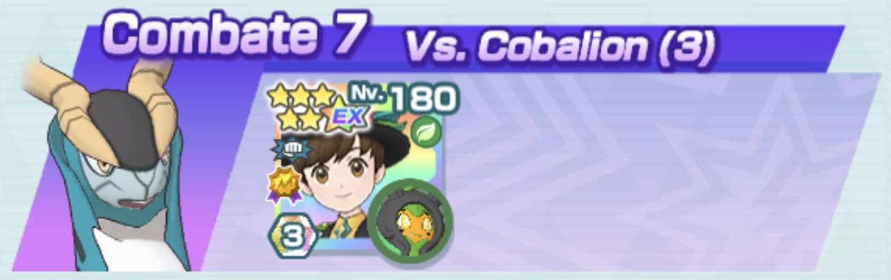
VS. Latios
Corin debe recuperar dos veces PM en su movimiento de entrenador para maximizar sus características. Reduce el Ataque Especial de los oponentes al máximo con Estoicismo y el resto del conbate Swadloon aguantará a base de Gigadrenado. Derrota primero a Dragonite y después a Salamence.
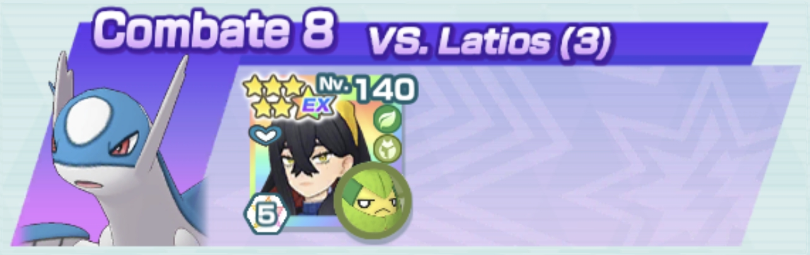
VS. Registeel

Envenena a Registeel en barras de PS 1 y 2 y ataca constantemente con Avalancha tanto para hacerlo retroceder como para reducir sus características. Al inicio de la barra de PS 2 comienza con Avalancha para intentar evitar que use Terremoto. Antes de que empiece la barra de PS 3, usa el movimiento sincro para volver a tener la Zona Veneno y, si puedes, repie la fórmula de la barra de PS 2 para evitar que use Terremoto.
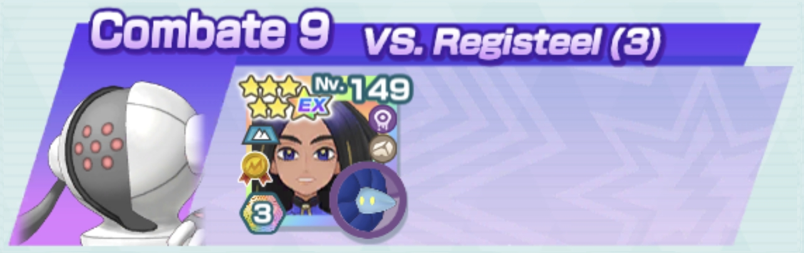
VS. Cobalion
Comienza con Teraclúster y un uso del movimiento sincro hasta poder usar el movimiento compi. Después, usa el movimiento de entrenador y continúa con Teraclúster. Comienza la barra de PS 2 con el movimiento teracristal y la barra de PS 3 con el movimiento sincro.
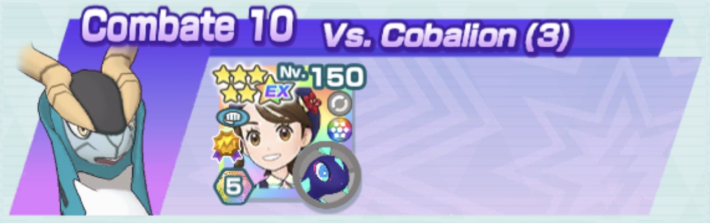
VS. Latios
Tras usar el movimiento de entrenador, usa Cañón Armadura de Armarouge hasta que tenga las defensas al mínimo. Después, gasta el movimiento sincro para maximizar las defensas y evitar reducciones de características. Continúa el resto del combate con Cañón Armadura, derrotando primero a Salamence y después a Dragonite.
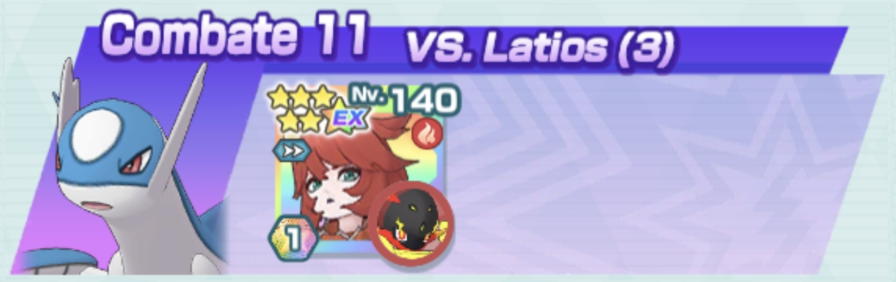
VS. Registeel

Bufa a Koraidon y usa el movimiento sincro al inicio de cada barra de PS. Para el resto del combate con Nitrochoque y el movimiento compi es suficiente.
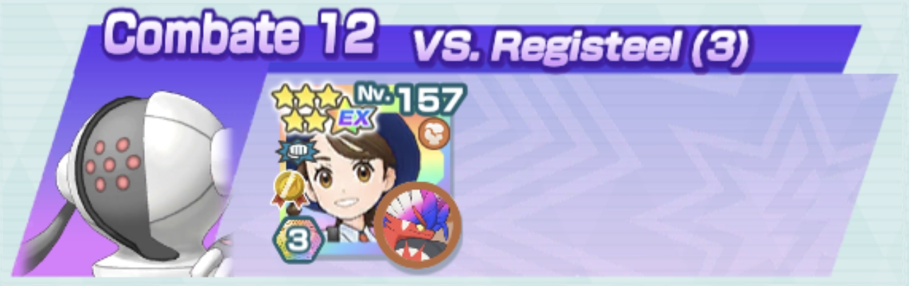
VS. Cobalion

Combate rapidísimo sin consumo de barras, que deja los stats de Cobalion por los suelos e incluso puedes hacerlo retroceder. Procura que el círculo no desaparezca, pues hace que Virizion se cure y tenga Siguiente sin coste. Reserva Espada Santa Alba para la barra de PS 3.
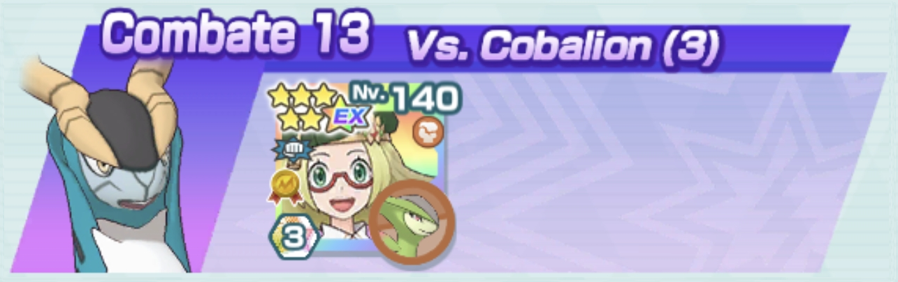
VS. Latios

Usa todo el tiempo Canto Arcaico y, si Meloetta cambia a Forma Danza y los oponentes no están confusos, usa Danza Caos. Usa el movimiento de entrenador después de Latios use Viente Hielo para recuperar la Velocidad perdida. Derrota primero a Dragonite y luego a Salamence.
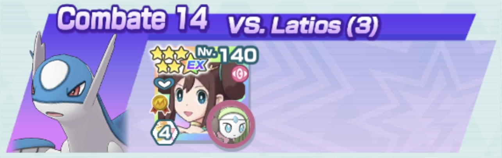
VS. Registeel

Comienza con el movimiento de entrenador de Liza, usa tres veces Giga Impacto y gasta las Energías Potenciadoras. Tras el movimiento compi y otro Giga Impacto, acabarás con la barra de PS 1. Lo ideal sería comenzar la barra de PS 2 con el movimiento sincro para hacer retroceder a Registeel e impedir que ataque tras otro Giga Impacto. En la barra de PS 3 reza para que Ferroverdor aguante los últimos movimientos y consiga derrotar a Registeel.
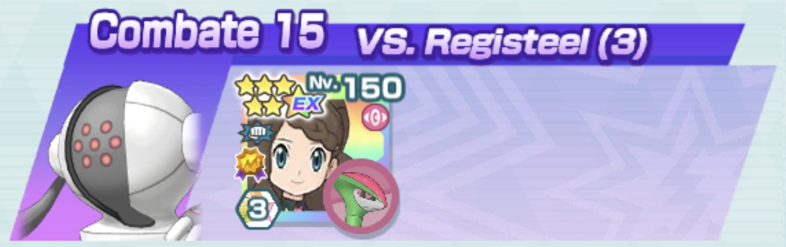
VS. Cobalion

Comienza reduciendo al máximo la Defensa Especial de Cobalion con Rayo Hielo, continúa con el movimiento de entrenador y Rugido de Guerra para activar la Zona Hielo EX. De un movimiento compi y un Rayo Hielo acabas la barra de PS 1. El movimiento sincro acabará con la barra de PS 2. Acaba la barra de PS 3 con Rayo Hielo o usa de nuevo el movimiento de entrenador para intentar usar un movimiento compi.
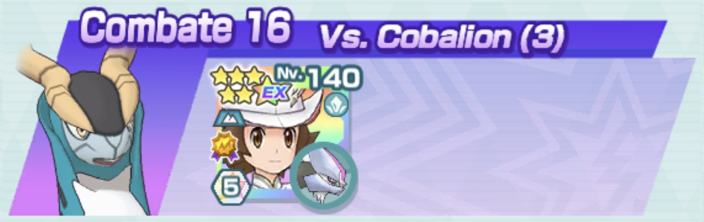